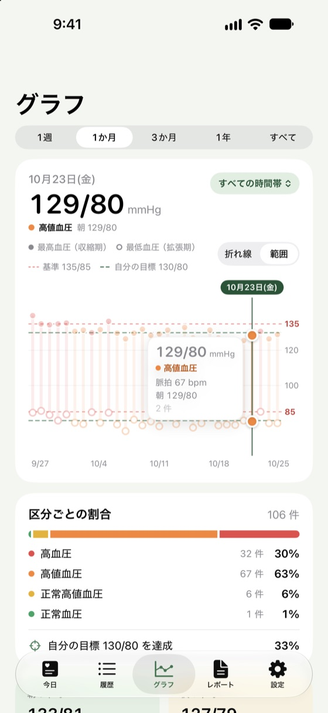
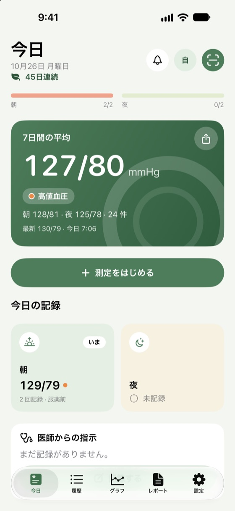
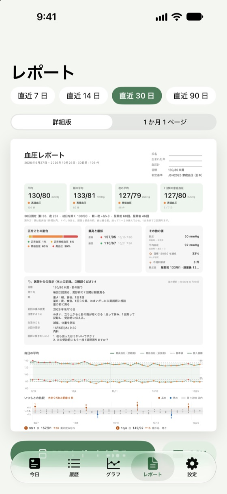

血圧記録帳
血圧記録帳あなたに合わせたホーム画面
最初にいくつか答えるだけでホーム画面が並びます。「大きな文字・シンプル」なら文字もボタンも大きく、ご高齢の方にも使いやすい画面です。
測ったら数秒で記録。朝晩の平均を自動で計算し、受診のときは整ったレポートを医師に見せられます。
このアプリは血圧を測定しません。お手持ちの血圧計と一緒にお使いください。



家庭での血圧測定のために。数字は大きく、操作は少なく。
最初にいくつか答えるだけでホーム画面が並びます。「大きな文字・シンプル」なら文字もボタンも大きく、ご高齢の方にも使いやすい画面です。
「測定をはじめる」で安静のカウントダウン、2 回測ると平均を自動で計算。血圧計の撮影や Siri でも記録でき、薬を飲んだかどうかも残せます。
目標、測り方、薬の飲み方、次の受診日、聞きたいことを記録し、医師のメモや薬袋も撮影して残せます。受診の 3 日前にお知らせします。
測った日数、朝晩の平均、服薬前後、日ごとの記録を PDF に。いつもより大きく上下した日は、記録した状況と一緒に示します。
記録のあとにひとこと、30 日間は同じ言葉を繰り返しません。連続日数は 1 日休んでも途切れず、通知から直接記録もできます。
血圧計のアプリがヘルスケアに保存した値を自動で取り込み、入手元も表示。ここで記録した値もヘルスケアに保存します。
お住まいの国のガイドラインに沿って区分します。医師から言われた目標値も設定できます。
家庭血圧 135/85 以上は高血圧（日本高血圧学会 JSH2025）
家庭血圧 130/80 以上はステージ 1 高血圧（ACC/AHA 2017 の家庭血圧の対応値、2025 年版も同じ）
家庭血圧 130/80 以上は生活を見直し、医師に相談（2022 年台湾高血圧ガイドライン）
必要になったら Pro に。それ以前の記録は削除されず、CSV とバックアップにはいつもすべての記録が入ります。
測れません。iPhone では血圧を測れないため、お手持ちの血圧計で測って、その数値を本アプリに記録してください。血圧計のアプリがヘルスケアに保存する場合は、本アプリが自動で取り込みます。
血圧計のアプリでヘルスケアへの書き込みをオンにしてから、本アプリの「設定」>「Apple ヘルスケア」で連携してください。以後、ヘルスケアに保存された血圧が自動で本アプリに表示されます。
対応する iPhone（iOS 27、Apple Intelligence をオンにした iPhone 15 Pro 以降）でできます。入力画面の一番上の「血圧計を撮影」を押して画面を撮るか、写真から 1 枚選びます。iPhone の中の AI が 2 回読み取り、違った数字はオレンジの枠で示すので、確認してから「保存」を押してください。写真は iPhone の中で読み取るだけで、アップロードも保存もしません。ほかの iPhone では今までどおり数字キーで入力できます。
できます。Siri に「血圧記録帳で血圧を記録」と話しかけると、最高血圧と最低血圧をたずね、保存したあと区分を読み上げます。180/120 以上のときは、取るべき行動も読み上げます。記録を追加するには iPhone のロックを解除してください。「ショートカット」App にも「血圧を記録」アクションがあります。
「今日」の「7日間の平均」カード右上の共有ボタンを押すと、直近 7 日を 1 枚の「血圧のまとめ」画像にします。LINE やメッセージで家族に送ったり、写真に保存したりできます。画像は iPhone の中で作られ、あなたが選んだ送り先にだけ送られます。
本アプリはお住まいの国の公開ガイドラインに沿って区分し、「設定」>「基準」で変更できます。医師はあなたの状態全体を見て目標を決めるので、医師の指示を優先してください。医師から言われた目標値をアプリに設定することもできます。
iCloud バックアップやコンピュータへのバックアップで iPhone を移行すれば、データも移ります。「設定」>「書き出しとバックアップ」>「バックアップファイルを書き出す」で書き出し、新しい iPhone で「バックアップファイルから復元」することもできます。
アラームによるリマインダーには iOS 26.1 以降が必要で、iPhone の「設定」> 血圧記録帳 でアラームのスケジュールを許可する必要があります。許可していない場合は通知でお知らせします。その時間帯を記録済みの日は鳴りません。
解約：アプリの「設定」でいちばん上の Pro を押し、「解約する」→「Apple で解約する」と進みます。iPhone の「設定」>［ユーザ名］>「サブスクリプション」からも解約できます。解約しても、支払い済みの期間が終わるまで Pro を使え、記録は残ります。
返金：同じ画面の「返金をリクエスト」から Apple の返金画面を開けます。返金するかどうかは Apple が判断します。
購入の復元：機種変更や再インストールのあとは、Pro の画面で「購入を復元」を押してください。
されません。データは iPhone の中だけに保存されます。詳しくはプライバシーポリシーをご覧ください。
通常、数日以内にお返事します。iPhone の機種と iOS のバージョンをお書き添えください（血圧の記録は送らなくて大丈夫です）。
本アプリは記録のためのもので、医療機器ではなく、診断や治療は行いません。緊急時はすぐに 119 番へ。